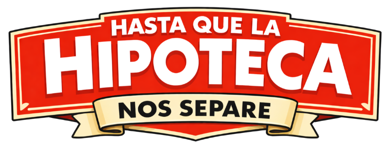
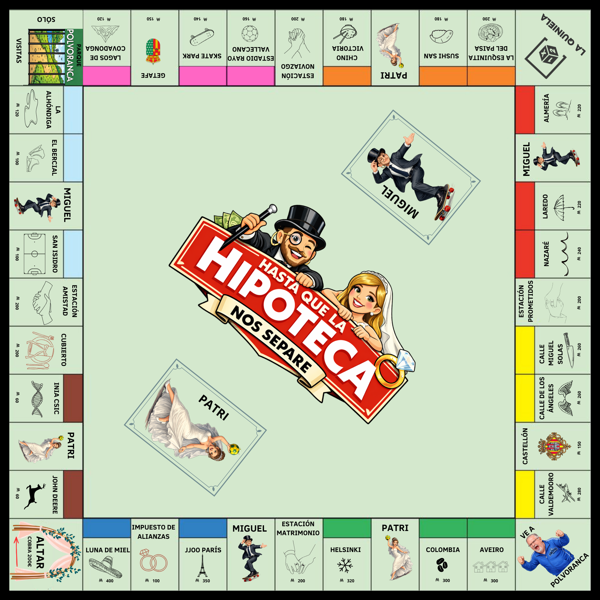
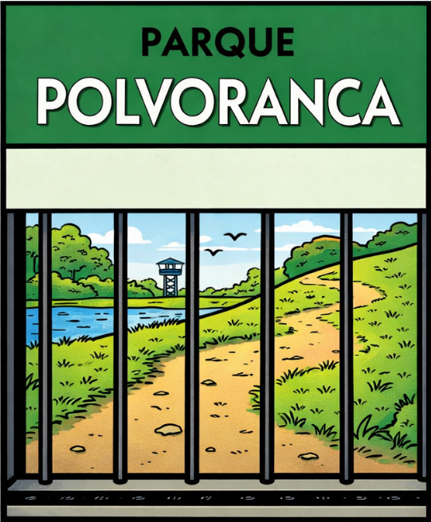

Elige a cualquier jugador para que sea el Banquero. El Banquero también puede jugar, pero debe mantener su dinero separado del Banco. La Banca está a cargo de:
Sus funciones incluyen:
NOTA: La Banca no quiebra. Si se queda sin dinero, puede emitir dinero en un papel en blanco.
El Banquero debe repartir a cada jugador un total de 1500 de la siguiente manera:
Baraja las cartas de Patri y Miguel y colócalas en sus lugares indicados en el tablero.
Cada jugador elige una ficha y la coloca en la Casilla del Altar para comenzar.
Muévete por el tablero comprando propiedades para cobrar alquileres a los demás.
Para ganar, debes ser el último jugador con dinero cuando todos los demás hayan quebrado. En tu turno:
Existen tres tipos: Títulos de Propiedad (colores), Servicios Públicos (Getafe y Castellón) y Estaciones.
Para comprar casas debes tener un monopolio y ninguna propiedad hipotecada de ese color.
Se debe construir de forma uniforme (máximo 4 casas por propiedad).
Al tener 4 casas, puedes pagar para sustituirlas por un Hotel. Solo se permite un hotel por propiedad.
Es la casilla de inicio del juego, todas las fichas se colocan aquí para empezar a jugar.
Cada vez que un jugador caiga o pase por la Casilla del Altar cobrará 200.

Puedes caer aquí por penalización o simplemente de visita.
Vas directamente si caes en la casilla "Vaya al Parque", por carta o por sacar 3 veces dobles. Al ir por penalización, no cobras los 200 del Altar.
Para salir: Pagar 50, usar una tarjeta "Quedas libre del Parque Polvoranca", sacar dobles o esperar 3 turnos (pagando 50 al finalizar el tercero).
Al pagar impuestos, el dinero se coloca en el centro del tablero.
El jugador que caiga en la casilla de La Quiniela cobra todo lo acumulado hasta ese momento.
Si caes en una de estas casillas, deberás coger una tarjeta del montón que está en el tablero y leerla en voz alta siguiendo las instrucciones de la carta. Las acciones que te pueden pedir suelen ser:
Si necesitas dinero, puedes vender edificios a la mitad de su coste o hipotecar propiedades. Antes de hipotecar, debes vender todos sus edificios. Una propiedad hipotecada no cobra alquiler. Para levantar la hipoteca, debes pagar el valor más un 10% de interés.
No se puede prestar dinero entre jugadores, pero se puede negociar el pago de deudas con propiedades. Si no puedes pagar tus deudas, ¡estás en bancarrota y fuera del juego!.
¿Tienes dudas sobre las reglas o te falta alguna pieza?
Teléfono: 917020510
Email: equip@marketing.com
Ubicación:Calle de la amargura y el desasosiego 20, 917101, Getafe, Cuna de aviación española.
Recomendamos llamar al telefóno indicado antes de empezar a jugar.
Cualquier parecido con la realidad es pura intencionalidad.